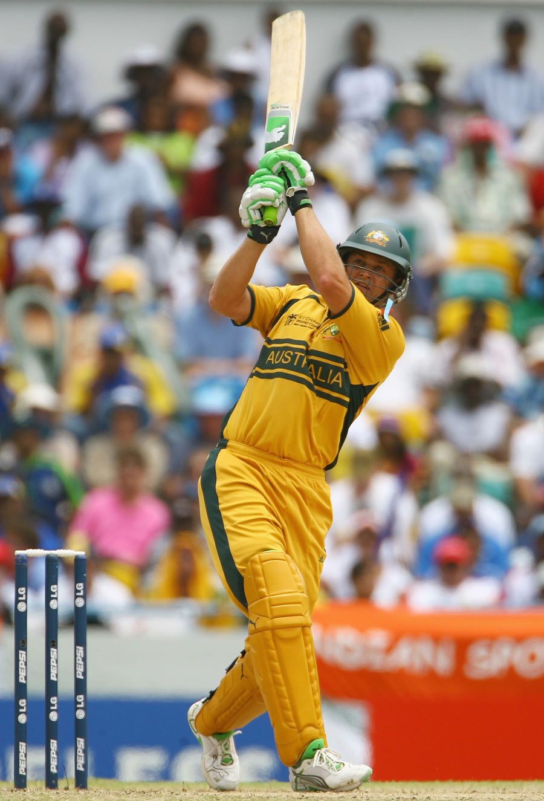

HTML Tags Example - Adam Gilchrist Fan Page
Adam Gilchrist is a legendary cricketer known for his explosive batting.
He played for:
Australia, New South Wales, Deccan Chargers.

Top Skills
- Wicket Keeper Batsman
- Captain
- Left Handed batsman
Brand Collabs
- Puma
- Kookabura in earlies
- Toyota
Career Time-line
- Debut in 1996
- World Cup Wins - 1999, 2003, 2007
- Retirement - 2008
Career Stats
| Format |
Matches |
Runs |
Century |
| Test |
96 |
5,570 |
17 |
| ODI |
287 |
9,619 |
16 |
Gilchrist played in the IPL for Deccan Chargers.
"I walked even when the umpire didn’t give me out. That’s how I played."
More About Gilly
- Scored 149 in 2007 World Cup Final.
- Scored 172 in ODI Career as highest score
- 2nd Most number of dismissals done.
- Scored 204 In Test.
- Won IPL Champions title in 2008 For Deccan chargers.
Go To Previous Page
Go To 1st Page